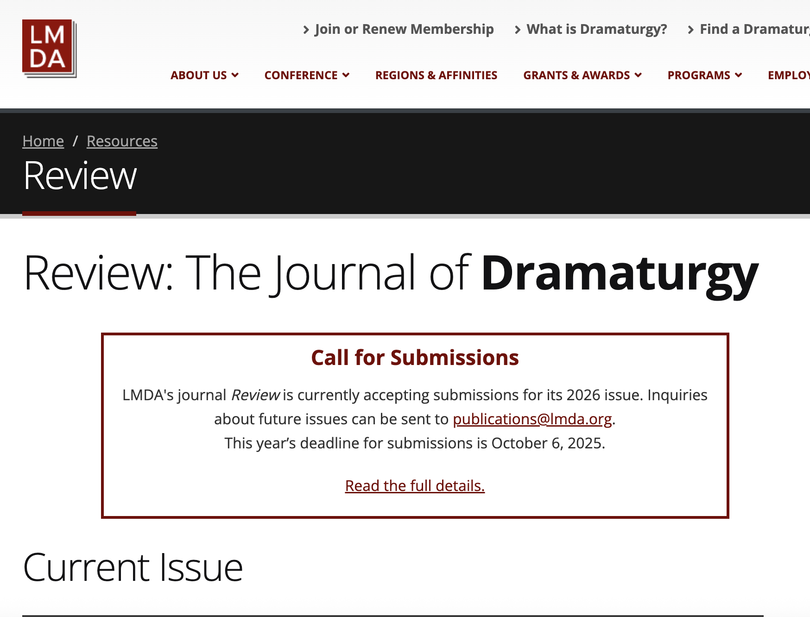

Alyssa Barrack
Home
CV
Projects
Theatre
Writing
Selected Writing Samples
LMDA Review Vol 30 Iss 1, 2025, Book review: Decentered Playwriting: Alternative Techniques for the Stage edited by Carolyn M Dunn, Eric Micha Holmes, and Les Hunter.

Cozy Horror: A Digital Essay (seeking a home)
MA Thesis
Book Review: Antonin Artaud by Blake Morris, for Ecumenica Journal
Film Review Article, "Recognizing Queerness and Self in The Craft: Legacy", Gayly Dreadful.
Additional Technical and Dramaturgical samples available here.